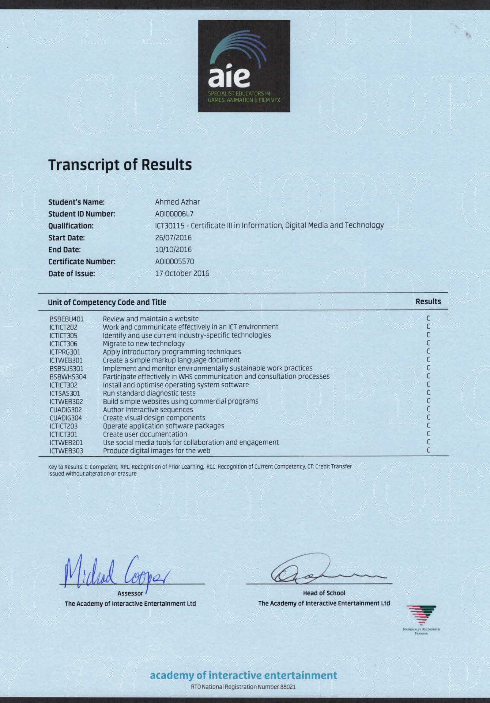

I recieved a Certificate III in Information, Digitial Media and Technology from the Academy of Interactive Entertainment. The course involved the development and maintinance of a website as well ad the development of a game in a group.

The transcript of results shows my competence in web development, work and communication in an ICT environment and other relevant fields.
Relevant Skills: Technical Skills, group Work and communication